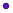
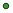

<!doctype html>
<html lang="en">
    <head>
        <meta charset="utf-8">
        <meta http-equiv="X-UA-Compatible" content="IE=edge">
        <meta name="viewport" content="initial-scale=1,user-scalable=no,maximum-scale=1,width=device-width">
        <meta name="mobile-web-app-capable" content="yes">
        <meta name="apple-mobile-web-app-capable" content="yes">
        <link rel="stylesheet" href="css/leaflet.css">
        <link rel="stylesheet" href="css/qgis2web.css"><link rel="stylesheet" href="css/fontawesome-all.min.css">
        <style>
        html, body, #map {
            width: 100%;
            height: 100%;
            padding: 0;
            margin: 0;
        }
        </style>
        <title></title>
    </head>
    <body>
        <div id="map">
        </div>
        <script src="js/qgis2web_expressions.js"></script>
        <script src="js/leaflet.js"></script>
        <script src="js/leaflet.rotatedMarker.js"></script>
        <script src="js/leaflet.pattern.js"></script>
        <script src="js/leaflet-hash.js"></script>
        <script src="js/Autolinker.min.js"></script>
        <script src="js/rbush.min.js"></script>
        <script src="js/labelgun.min.js"></script>
        <script src="js/labels.js"></script>
        <script src="data/CCGPSamplingLocations_1.js"></script>
        <script>
        var map = L.map('map', {
            zoomControl:true, maxZoom:28, minZoom:1
        }).fitBounds([[33.773889146839494,-118.68129292214135],[34.195017076526995,-118.14637537508881]]);
        var hash = new L.Hash(map);
        map.attributionControl.setPrefix('<a href="https://github.com/tomchadwin/qgis2web" target="_blank">qgis2web</a> &middot; <a href="https://leafletjs.com" title="A JS library for interactive maps">Leaflet</a> &middot; <a href="https://qgis.org">QGIS</a>');
        var autolinker = new Autolinker({truncate: {length: 30, location: 'smart'}});
        var bounds_group = new L.featureGroup([]);
        function setBounds() {
        }
        map.createPane('pane_OpenStreetMap_0');
        map.getPane('pane_OpenStreetMap_0').style.zIndex = 400;
        var layer_OpenStreetMap_0 = L.tileLayer('http://a.tile.openstreetmap.org/{z}/{x}/{y}.png', {
            pane: 'pane_OpenStreetMap_0',
            opacity: 1.0,
            attribution: '',
            minZoom: 1,
            maxZoom: 28,
            minNativeZoom: 0,
            maxNativeZoom: 19
        });
        layer_OpenStreetMap_0;
        map.addLayer(layer_OpenStreetMap_0);
        function pop_CCGPSamplingLocations_1(feature, layer) {
            var popupContent = '<table>\
                    <tr>\
                        <td colspan="2"><strong>Group</strong><br />' + (feature.properties['Group'] !== null ? autolinker.link(feature.properties['Group'].toLocaleString()) : '') + '</td>\
                    </tr>\
                    <tr>\
                        <th scope="row">Species</th>\
                        <td>' + (feature.properties['Species'] !== null ? autolinker.link(feature.properties['Species'].toLocaleString()) : '') + '</td>\
                    </tr>\
                    <tr>\
                        <th scope="row">PI</th>\
                        <td>' + (feature.properties['PI'] !== null ? autolinker.link(feature.properties['PI'].toLocaleString()) : '') + '</td>\
                    </tr>\
                    <tr>\
                        <th scope="row">Email</th>\
                        <td>' + (feature.properties['Email'] !== null ? autolinker.link(feature.properties['Email'].toLocaleString()) : '') + '</td>\
                    </tr>\
                </table>';
            layer.bindPopup(popupContent, {maxHeight: 400});
        }

        function style_CCGPSamplingLocations_1_0(feature) {
            switch(String(feature.properties['Group'])) {
                case 'Invertebrate':
                    return {
                pane: 'pane_CCGPSamplingLocations_1',
                radius: 4.0,
                opacity: 1,
                color: 'rgba(35,35,35,1.0)',
                dashArray: '',
                lineCap: 'butt',
                lineJoin: 'miter',
                weight: 1,
                fill: true,
                fillOpacity: 1,
                fillColor: 'rgba(118,0,254,1.0)',
                interactive: true,
            }
                    break;
                case 'Marine':
                    return {
                pane: 'pane_CCGPSamplingLocations_1',
                radius: 4.0,
                opacity: 1,
                color: 'rgba(35,35,35,1.0)',
                dashArray: '',
                lineCap: 'butt',
                lineJoin: 'miter',
                weight: 1,
                fill: true,
                fillOpacity: 1,
                fillColor: 'rgba(33,110,227,1.0)',
                interactive: true,
            }
                    break;
                case 'Plant':
                    return {
                pane: 'pane_CCGPSamplingLocations_1',
                radius: 4.0,
                opacity: 1,
                color: 'rgba(35,35,35,1.0)',
                dashArray: '',
                lineCap: 'butt',
                lineJoin: 'miter',
                weight: 1,
                fill: true,
                fillOpacity: 1,
                fillColor: 'rgba(51,160,44,1.0)',
                interactive: true,
            }
                    break;
                case 'Vertebrate':
                    return {
                pane: 'pane_CCGPSamplingLocations_1',
                radius: 4.0,
                opacity: 1,
                color: 'rgba(35,35,35,1.0)',
                dashArray: '',
                lineCap: 'butt',
                lineJoin: 'miter',
                weight: 1,
                fill: true,
                fillOpacity: 1,
                fillColor: 'rgba(255,1,1,1.0)',
                interactive: true,
            }
                    break;
            }
        }
        map.createPane('pane_CCGPSamplingLocations_1');
        map.getPane('pane_CCGPSamplingLocations_1').style.zIndex = 401;
        map.getPane('pane_CCGPSamplingLocations_1').style['mix-blend-mode'] = 'normal';
        var layer_CCGPSamplingLocations_1 = new L.geoJson(json_CCGPSamplingLocations_1, {
            attribution: '',
            interactive: true,
            dataVar: 'json_CCGPSamplingLocations_1',
            layerName: 'layer_CCGPSamplingLocations_1',
            pane: 'pane_CCGPSamplingLocations_1',
            onEachFeature: pop_CCGPSamplingLocations_1,
            pointToLayer: function (feature, latlng) {
                var context = {
                    feature: feature,
                    variables: {}
                };
                return L.circleMarker(latlng, style_CCGPSamplingLocations_1_0(feature));
            },
        });
        bounds_group.addLayer(layer_CCGPSamplingLocations_1);
        map.addLayer(layer_CCGPSamplingLocations_1);
        var baseMaps = {};
        L.control.layers(baseMaps,{'CCGP Sampling Locations<br /><table><tr><td style="text-align: center;"></td><td>Invertebrate</td></tr><tr><td style="text-align: center;"></td><td>Marine</td></tr><tr><td style="text-align: center;"></td><td>Plant</td></tr><tr><td style="text-align: center;"></td><td>Vertebrate</td></tr></table>': layer_CCGPSamplingLocations_1,"OpenStreetMap": layer_OpenStreetMap_0,},{collapsed:false}).addTo(map);
        setBounds();
        </script>
    </body>
</html>
